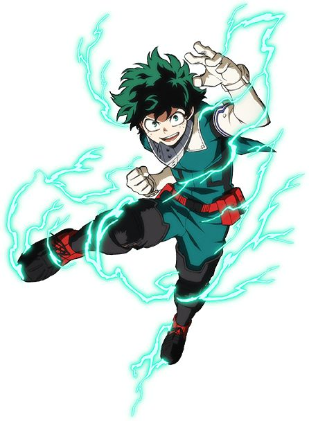

Protagonista
Izuku Midoriya é um jovem que nasceu sem Quirk (poder especial) em um mundo onde a maioria das pessoas possui habilidades únicas, chamadas de Individualidades. Desde criança, ele sonhava em se tornar um herói, inspirado por seu ídolo, o Herói Número Um, All Might. Apesar de sofrer bullying e ser subestimado por seus colegas, Midoriya sempre demonstrou coragem, altruísmo e determinação, arriscando sua vida para proteger os outros mesmo sem possuir poderes

Queridinhos
Katsuki Bakugo
Katsuki Bakugo é um estudante da U.A. em My Hero Academia conhecido por sua personalidade explosiva e competitiva. Sua individualidade permite criar explosões usando o suor das mãos. No início, ele tratava Izuku Midoriya como rival, mas aos poucos amadurece e aprende a trabalhar em equipe. Mesmo sendo agressivo, Bakugo sonha em se tornar um grande herói como All Might.

All Might
All Might é o maior herói de My Hero Academia. Ele tinha o poder One For All, lutou contra grandes vilões e virou mentor de Izuku Midoriya, passando seu poder para ele. Mesmo perdendo a força, continuou sendo símbolo de esperança e heroísmo.